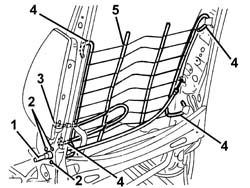
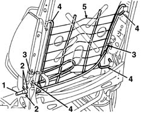

7045A38 device for driver`s seat squab lumbar adjustment - r r with seat removed
- Path
- Procedures > 70 FITTINGS > 7045 FRONT SEATS > 7045A front seat assembly > 7045A38 device for driver`s seat squab lumbar adjustment - r r with seat removed
- Kind
- repair procedure (removal / refitting; the operation number is the code)
- Applies to
- all engines; all production periods
- Interactive page
- https://sloeber94.github.io/elrnDB-a147/en/#/3025846
Applies to: all engines; all production periods
 Removing
Removing
 Refitting
Refitting7045A25 squab lumbar knob - r r
7045A84 Front set BACKREST COVER - R.R. with seat removed
1. Fit the knob temporarily and discharge the device (untensioned).
2. Drill out the rivets.
3. Disconnect the cable ends.
4. Disconnect the lumbar grille retainers.
5. Remove the lumbar adjustment device.

Applies to: all engines; all production periods
Refitting
RemovingCheck that the lumbar adjustment device is not damaged.
Position the device and connect the lumbar grille retainers.
Connect the cable ends.
Fit the rivets.
Check the operation of the lumbar adjustment device.
Applies to: all engines; all production periods; only with equipment: GTA
Removing
Refitting7045A25 squab lumbar knob - r r
7045A43 seat exterior guard - r r
7045A44 seat interior guard - r r
7045A98 front seat rear pouch panel, lh or rh - r r
7045A84 Front set BACKREST COVER - R.R. with seat removed
1. Fit the knob temporarily and discharge the device (untensioned).
2. Drill out the rivets.
3. Disconnect the cable ends.
4. Disconnect the lumbar grille retainers.
5. Remove the lumbar adjustment device.

Applies to: all engines; all production periods; only with equipment: GTA
Refitting
RemovingCheck that the lumbar adjustment device is not damaged.
Position the device and connect the lumbar grille retainers.
Connect the cable ends.
Fit the rivets.
Check the operation of the lumbar adjustment device.
7045A84 Front set BACKREST COVER - R.R. with seat removed
7045A98 front seat rear pouch panel, lh or rh - r r
7045A44 seat interior guard - r r
7045A43 seat exterior guard - r r
Topics linked from this page (6)
- 7045A24 squab knob - r r
- 7045A25 squab lumbar knob - r r
- 7045A43 seat exterior guard - r r
- 7045A44 seat interior guard - r r
- 7045A84 Front set BACKREST COVER - R.R. with seat removed
- 7045A98 front seat rear pouch panel, lh or rh - r r